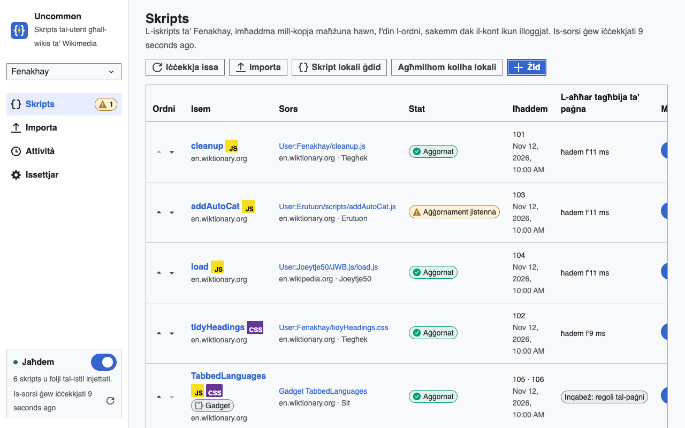
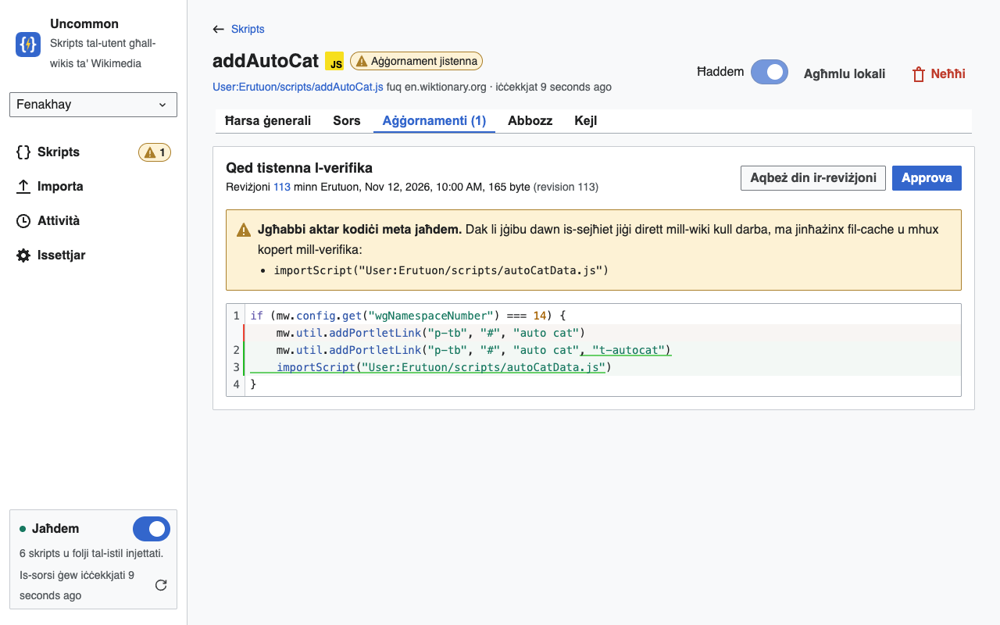

Installa
Uncommon iħaddem l-iskripts tal-utent u l-folji tal-istil tiegħek ta' Wikimedia minn kopja miżmuma fil-browser tiegħek, minflok il-common.js tiegħek.
Skript mgħobbi minn common.js jistenna, f'kull wiri ta' paġna, katina ta' talbiet: il-paġna, il-modulu tal-bidu, il-modulu user, u talba oħra għal kull importScript. Uncommon iżomm it-test ta' kull skript fil-browser, li jinjettah qabel ma jaħdmu l-iskripts tal-paġna stess. L-iskript jistenna biss dak li jeħtieġ mill-paġna, u ma ssir l-ebda talba għall-iskript innifsu.
- Profili: wieħed għal kull kont tal-wiki. L-iskripts ta' profil jaħdmu biss sakemm dak il-kont ikun illoggjat, fuq il-wikis li tagħżel int: wieħed, xi wħud jew il-wikis kollha ta' Wikimedia.
- Importazzjoni: jaqra l-common.js, common.css, global.js jew global.css tiegħek, jelenka kull paġna li jgħabbi, u jżid dawk li tagħżel.
- Aġġornamenti: il-paġni tiegħek isegwu l-wiki kif issalvahom. Reviżjoni ta' editur ieħor tistenna sakemm taqra d-diff tagħha u tapprovaha, u sadanittant ir-reviżjoni approvata tibqa' taħdem.
- Gadgets: żid gadget tal-wiki ewlieni tiegħek bħala rekord wieħed, bl-iskripts u l-istili tiegħu.
- Abbozzi: ipprova bidla fil-browser qabel ma ssalvaha fuq il-wiki.
- Regoli tal-paġni: ħaddem skript biss f'ċerti spazji tal-ismijiet, azzjonijiet, paġni speċjali jew mudelli tal-kontenut.
- Attività: ara meta ħadem kull skript fl-aħħar 200 tagħbija ta' paġna, u għaliex wieħed inqabeż jew falla.
Jistgħu jiżdiedu biss sottopaġni ta' User: u paġni ta' MediaWiki:, paġni li jistgħu jeditjawhom biss sidhom jew l-amministraturi tal-wiki. Uncommon jaqra l-Action API tal-wikis b'mod anonimu, u xejn aktar. Qatt ma jeditja wiki u ma jibgħat xejn imkien: l-iskripts, l-issettjar u r-rapporti tiegħek jibqgħu fil-browser tiegħek.
Qabel ma jista' jħaddem skripts, il-browser jitolbok tippermetti skripts tal-utent. F'Chrome u Edge, ixgħel "Allow User Scripts" fil-paġna tad-dettalji tal-estensjoni; f'Firefox, agħżel Ippermetti fil-pannell. Il-pannell juri l-passi.
Uncommon jinsab bl-Ingliż, il-Franċiż, l-Għarbi, il-Ġermaniż, l-Olandiż u l-Malti.

